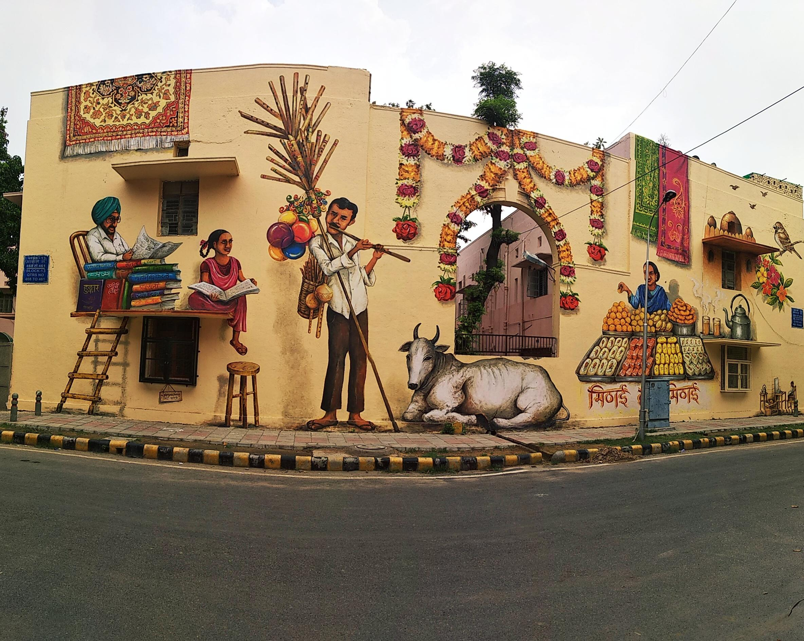
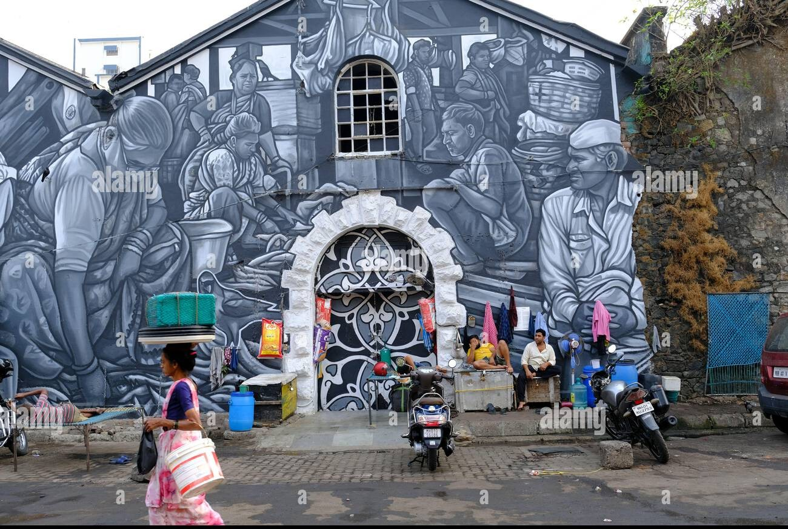
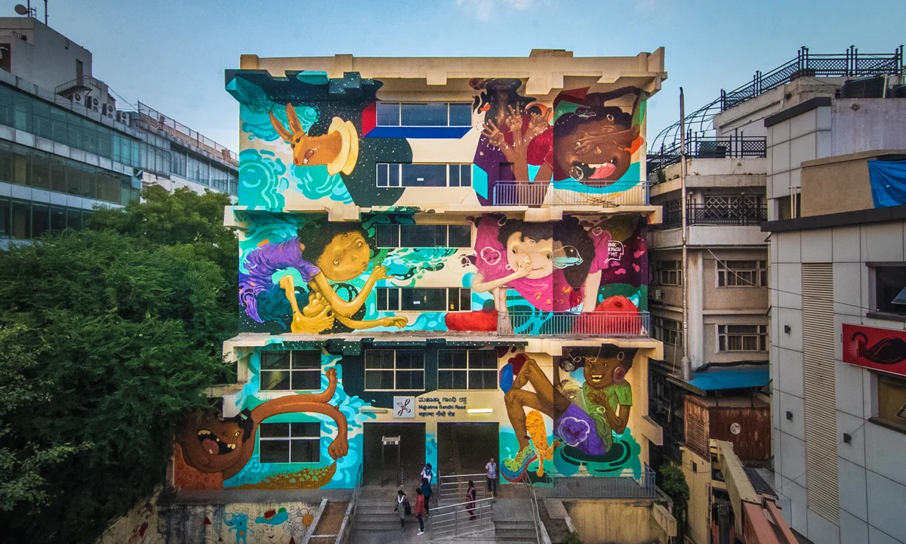

Delhi
Delhi is the undisputed capital of Indian street art. Home to Lodhi Art District — India's first and largest open air art gallery — the city has been transformed from a grey bureaucratic landscape into one of the most colourful urban canvases in Asia. Delhi's street art is bold, political, and deeply rooted in the city's complex identity as a place where ancient history and modern chaos collide every single day.
Lodhi Art District

Created in 2014–15 by St+art India Foundation in partnership with the Delhi government, Lodhi Colony features over 50 murals by Indian and international artists spread across an entire residential colony. It is now one of Delhi's most visited tourist destinations and a pilgrimage site for art lovers from around the world. Entry is free and the colony can be explored on foot.
Key Locations to Visit:
- Lodhi Colony — the crown jewel, 50+ murals in one walkable area
- Shahpur Jat — urban village with indie galleries and street art
- Khirki Village — dense with murals by young Delhi artists
- Hauz Khas Village — boutique galleries and painted alleys
- Lajpat Nagar flyover — large format political murals
Notable Artists Based in Delhi:
Daku, Yantr, Inkbrushnme, Tyler (frequent visitor)
Best Time to Visit:
October to March — Delhi winters are perfect for walking the art district. Avoid May to July — extreme heat makes outdoor exploration difficult.
Mumbai
Mumbai is India's city of dreams and its walls dream loudly. The city's street art scene is as chaotic, layered, and intensely alive as Mumbai itself — spread across industrial docks, dense chawls, upscale neighbourhoods, and everything in between.
Sassoon Docks Art Project

A historic 19th century fish market in Colaba has been transformed into one of Mumbai's most exciting art spaces. Murals by leading Indian and international artists cover the walls of working fishing boats, warehouses, and dock buildings.
Dharavi
Asia's most famous informal settlement is also home to some of Mumbai's most powerful street art.
Key Locations to Visit:
- Sassoon Docks, Colaba
- Bandra — the hip hub of Mumbai street art
- Dharavi — community murals with real emotional depth
- Kurla — raw urban graffiti
- Andheri West — commissioned murals and independent art
Notable Artists Based in Mumbai:
Guesswho, Doppelganger, Prablek
Bengaluru
Bengaluru brings its signature blend of technology, youth culture, and social progressivism to street art.

The Bengaluru Scene
Unlike Delhi's more organised art district, Bengaluru's street art feels more organic — discovered in unexpected corners of neighbourhoods like Indiranagar and Koramangala.
Key Locations to Visit:
- Indiranagar — the most concentrated area of street art in the city
- Koramangala — social message murals near cafes
- Church Street — mix of commissioned and unsanctioned works
- Jayanagar — folk-influenced murals
- HSR Layout — newer murals by young artists
Notable Artists Based in Bengaluru:
Emerging artists from the St+art India Bengaluru festival circuit
Kolkata
Kolkata has the longest and deepest tradition of political wall art in India.
The Political Wall Art Tradition

Kolkata walls have been painted with political messages since the Bengal partition era.
The New Generation

Contemporary Kolkata artists are engaging with this tradition — creating murals addressing climate change, gender equality, and cultural memory.
Key Locations to Visit:
- College Street — literary and political imagery
- Gariahat — mix of commercial and art murals
- Ballygunge — residential contemporary murals
- New Town — commissioned public art
- Jodhpur Park — independent murals